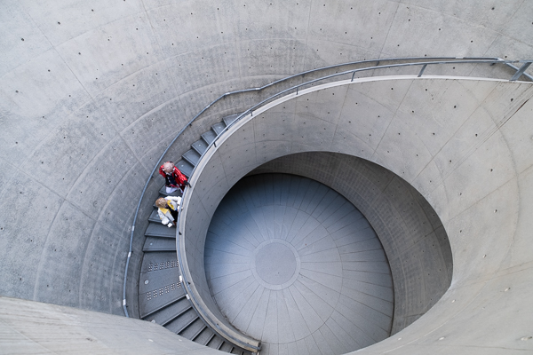
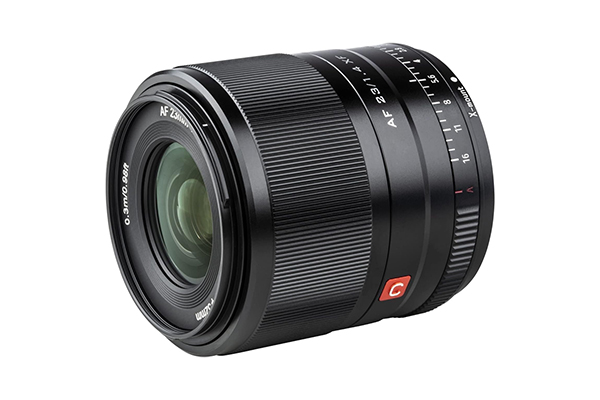
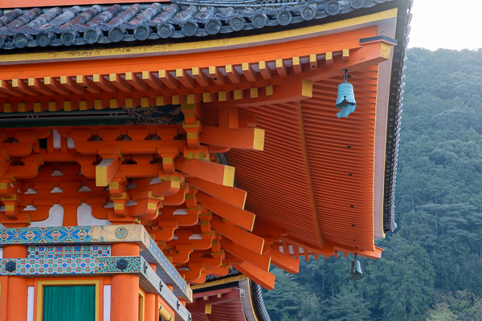
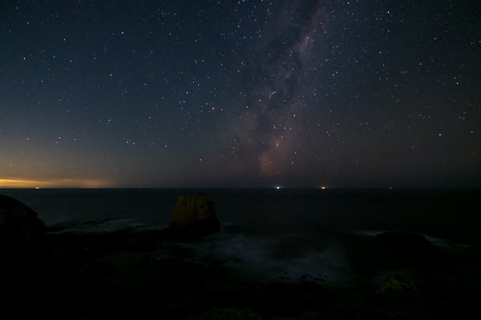
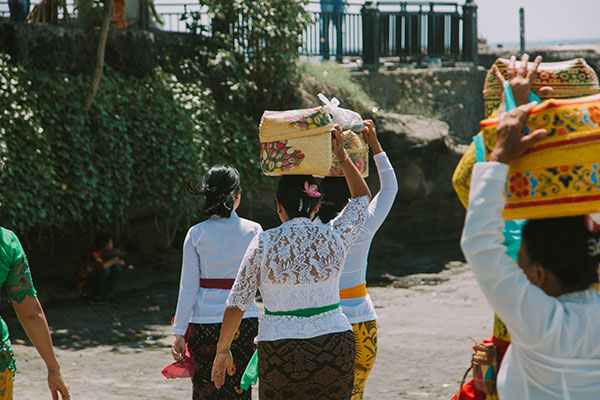
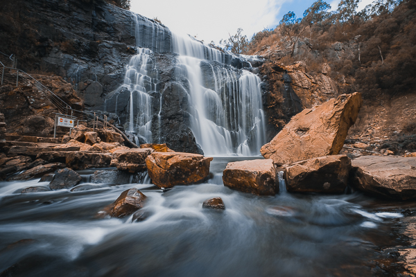

Mordern Architecture Photography
Mastering modern architecture photography requires a keen eye for design, an understanding of light and shadow, and technical proficiency with camera settings. Capturing the essence of contemporary buildings often involves finding unique perspectives and angles that highlight their innovative features and materials.
Read More

Camera Lens
Selecting the right camera lens is crucial for achieving the desired perspective and image quality in architectural photography. Wide-angle lenses are often preferred for capturing expansive views and emphasizing the scale of buildings, while prime lenses offer sharpness and clarity for detailed shots.
Read More

Ancient Architecture Photography
Photographing ancient architecture requires a respectful approach that honors the historical significance and craftsmanship of the structures. Utilizing natural light and careful composition can help to capture the timeless beauty and intricate details that tell the story of these enduring monuments through imagery.
Read More

Astrophotography
Capturing stunning photos of stars requires patience, planning, and an understanding of astrophotography techniques. Utilizing long exposures and minimizing light pollution can help reveal the mesmerizing beauty of the night sky, showcasing the vastness of the universe and the brilliance of celestial bodies.
Read More

Street Photography
Street photography is a spontaneous and immersive form of visual storytelling that captures authentic moments in urban life. It thrives on the unpredictability of city streets, where every scene is unique and fleeting. Photographers must be observant, quick to react, and able to convey the mood and energy of the streets through their images.
Read More

Slow Shutter Speed
Using a slow shutter speed can create dramatic effects in photography, such as blurring motion to convey a sense of movement or capturing long exposures for dreamy, ethereal landscapes. It requires a steady hand, a tripod for stability, and an understanding of how light and motion interact to achieve the desired artistic outcome.
Read More


 Forest Glade Garden
Forest Glade Garden
 Blue Boat House
Blue Boat House
 Cradel Mountain
Cradel Mountain
 J-Terrace Cafe
J-Terrace Cafe
 Water Temple
Water Temple
 Kinkaku Ji Temple
Kinkaku Ji Temple
 Tasman Lake
Tasman Lake
 Oamaru Friendly Bay
Oamaru Friendly Bay
 Surfing Family
Surfing Family
 Tuxedo Cat
Tuxedo Cat
 Splendid Fairywren
Splendid Fairywren
 Rainbow Lorikeet
Rainbow Lorikeet